Georgia Tech 2021: known problems
Not released. The local rebuild stopped at 102 of 2,301 recordings. Nothing on this page has been approved scientifically.
What this is
Walking on level ground, ramps, stairs and a treadmill from the Georgia Tech 2021 study: 22 participants in the original study, of which 16 are here (2,301 recordings) and 6 are not converted yet (846 recordings downloaded). This page lists every problem we know about. It is not a list of fixes: only 102 recordings (1,299 steps, all from AB06) have been rebuilt, so each card says where its problem stands.
Scope is measured against the source dataset: 22 participants in the original study, of which 16 are here (2,301 recordings) and six are not converted (846 recordings in the authors' 2024 copy). A step is one heel strike to the next heel strike of one leg; the 16 local participants have 78,604 of them in the source gait tables (21,363,858 samples). Only 102 recordings (1,299 steps), all from AB06, have been rebuilt, so measured counts below come from small checked sets and say so. Sample counts are given only where an audit has them.
Each card says what is wrong, how we know, how much it affects, and what else it could affect. Four statuses are used: fixed in a checked pilot (a pilot is a small trial run on a few recordings; the full rebuild does not use it yet), decided by the LocoHub maintainers, fix not yet run, open, and documented only, kept as published. A figure may show a sample; its caption says how it was drawn and the seed is recorded. Anything that needs more than a small read is marked not checked and needs a guarded job, which is a supervised run with memory limits.
All problems at a glance
| # | Problem | Where it stands | How much |
|---|---|---|---|
| 1 | Six of the 22 participants are not in the local data | Decided, fix not yet run | 6 of 22 participants (27.3%); 846 of 3,147 recordings (26.9%), counting the 2,301 local recordings plus the 846 in the 2024 copy. |
| 2 | The local files are the authors' 2024 copy, not the checksummed 2021 release | Decided, fix not yet run | 2 of 61 AB17 ramp joint-moment files (3.3%) differ between 2021 and 2024. |
| 3 | Force plates and force signs were picked from force and ankle-moment waveforms | Fixed in a checked pilot | In the 36 recordings compared before and after (30 overground, 6 treadmill, all AB06; 128,400 rows) the new rules changed 484,957 force values. |
| 4 | Sideways force and centre of pressure point opposite ways for the two feet | Decided, fix not yet run | All 2,301 local recordings (100%), in the two sideways force columns and the two sideways centre-of-pressure columns, wherever a plate gives a value. |
| 5 | Pelvis tilt, and the angles built on it, do not match the markers | Decided, fix not yet run | The pelvis tilt column and four angle columns built on it (thigh, shank, foot, trunk) in all 2,301 local recordings (100%). |
| 6 | Joint-angle zero is now defined by the segment angles | Decided, fix not yet run | Every joint angle in all 2,301 local recordings (100%) is affected by the new zero rule. |
| 7 | The unit of participant weight is not stated | Open | Every force, moment and power column that is divided by body weight or mass, in all 2,301 local recordings (100%), and all 22 participants have a number. |
| 8 | Many steps of the other leg were not exported | Open | 798 of 2,270 source steps (35.2%) in 36 recordings qualify but were not exported. |
| 9 | Ramp and stair labels could be filled with defaults | Open | 0 of 1,680 local ramp and stair recordings (0%) lack a source label. |
| 10 | Only 102 of 2,301 recordings have been rebuilt, and a stair recording failed | Open | 2,199 of 2,301 local recordings (95.6%) are not rebuilt; 15 of 16 local participants have none. |
| 11 | Some legs have no usable force plate | Documented only, kept as published | 235 of 2,222 leg-steps (10.6%) in the 51 completed recordings have no supported plate: overground 200 of 274 (73.0%), ramps 35 of 78 (44.9%), treadmill 0 of 1,870. |
| 12 | Forward force and centre of pressure use one fixed lab direction | Documented only, kept as published | Forward force and forward centre of pressure in all 2,301 local recordings (100%) carry this limit; how much is lost per recording is measured in 8 only. |
| 13 | Centre of pressure is measured from the outer ankle marker, not from the decided origin | Decided, fix not yet run | All centre-of-pressure columns in all 2,301 local recordings (100%) are relative to the ankle marker, not to the decided origin (100 mm forward of the ankle joint centre in the foot's frame). |
The problems
1. Six of the 22 participants are not in the local data
Decided, fix not yet run The maintainers chose the authors' 2024 copy as the source for the six. All six are downloaded and checked against the folder listing. None is unpacked or converted yet.
What is wrong. The original study has 22 participants. The local source folder holds 16 of them (2,301 recordings). AB12, AB15, AB17, AB19, AB23 and AB28 were never converted. For AB17, the one participant whose 2021 published archive we opened, that archive has no static-pose files and no joint angles relative to the static pose, which our conversion code reads.
How we know. The publisher lists 22 archives, rechecked on 31 October 2026 with unchanged size and checksum. The local folder holds 16 participants and no extra ones. The other five 2021 archives were not opened.
Example. AB17, compared with its 2021 archive: 1,464 of 1,466 files are identical in size and checksum, 136 exist only in the 2024 copy (133 relative joint-angle files and 3 static-pose files), and 2 ramp joint-moment files differ.
How much was affected
6 of 22 participants (27.3%); 846 of 3,147 recordings (26.9%), counting the 2,301 local recordings plus the 846 in the 2024 copy.
Recordings are counted from the file listings of the 2024 copy (one recording per conditions file). Samples are not known: the six have not been opened.
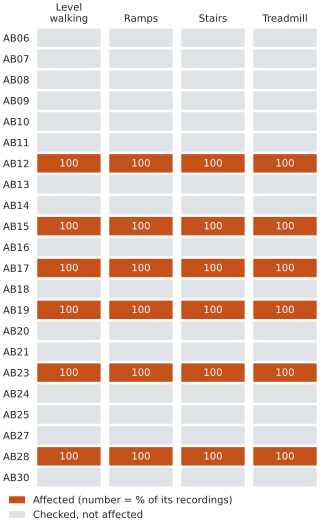
| Participant | Recordings | Level / ramp / stair / treadmill | Files | Size | Where it stands |
|---|---|---|---|---|---|
| AB12 | 147 | 34 / 63 / 43 / 7 | 1,770 | 1.17 GB | Downloaded and checked, not unpacked or converted |
| AB15 | 136 | 25 / 63 / 41 / 7 | 1,638 | 1.10 GB | Downloaded and checked, not unpacked or converted |
| AB17 | 133 | 22 / 61 / 43 / 7 | 1,602 | 1.05 GB | Downloaded and checked, not unpacked or converted |
| AB19 | 143 | 30 / 65 / 41 / 7 | 1,722 | 1.26 GB | Downloaded and checked, not unpacked or converted |
| AB23 | 145 | 33 / 63 / 42 / 7 | 1,746 | 1.19 GB | Downloaded and checked, not unpacked or converted |
| AB28 | 142 | 30 / 64 / 41 / 7 | 1,711 | 1.24 GB | Downloaded and checked, not unpacked or converted |
What else this could affect
Direction: missing people change who the data describes. They do not change the values of the 16 people we have.
- Checked, not affected The 16 participants already here. The six were downloaded into a separate folder; the local source folder was not written. How we know: Local folder still holds exactly 16 participants and 2,301 recordings; no unexpected participant.
- Left out Any result that pools the whole cohort. Until the six are converted, pooled results describe 16 of 22 people. How we know: 846 recordings (26.9%) are not in the converted set.
- Not checked Joint-angle zero used for the six. Their folders list the same relative joint-angle files as the 16, but no file of the six has been read. No evidence yet.
- Not checked Body mass of the six. The subject sheet has a Weight number for all 22, but its unit is unresolved (see the body-mass card). No evidence yet.
2. The local files are the authors' 2024 copy, not the checksummed 2021 release
Decided, fix not yet run The maintainers chose the 2024 copy. The file-by-file comparison with the 2021 release has run for AB17 only.
What is wrong. The 16 local participants, and the six now downloaded, come from the authors' 2024 copy. Only the 2021 release has publisher checksums. The listings show that every ramp joint-moment file was rewritten in September 2021, after the first release, and that relative joint-angle files were added in April 2024.
How we know. We compared AB17's 2021 archive with the 2024 copy by size and checksum. Modification times in the listings are labels, not proof, and the 2024 folder is a live working copy.
Example. AB17 ramp recording 1 (right leg): the joint-moment file is 322,984 bytes in 2021 and 324,295 bytes in 2024. Ramp recording 6 (right leg, trial 4): 284,406 against 299,554 bytes. What changed inside is not decoded.
How much was affected
2 of 61 AB17 ramp joint-moment files (3.3%) differ between 2021 and 2024. The other 1,333 ramp recordings of the 22 participants have not been compared.
Counted over AB17's 1,602 files in the 2024 copy against 1,466 files in its 2021 archive. Percentages for the other participants are unknown, not zero. Samples are not counted.
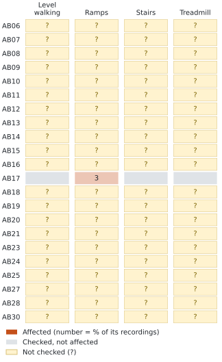
| Group of AB17 files | Files | Result |
|---|---|---|
| Same size and checksum in 2021 and 2024 | 1,464 | Identical |
| Only in the 2024 copy | 136 | 133 relative joint-angle files, 3 static-pose files |
| Ramp joint-moment files that differ | 2 | Rewritten after the 2021 release |
| Ramp joint-moment files that match | 59 | Identical, although dated September 2021 |
What else this could affect
Direction: a changed file only affects the quantity stored in it. Ramp joint moments are the exposed quantity; angles, forces and marker files were identical in AB17.
- Not checked Ramp joint moments and powers. Two AB17 files changed; whether the change matters is unknown for AB17 and for every other participant. No evidence yet.
- Checked, not affected Joint angles, forces and markers of AB17. Every shared file except the two ramp moment files has the same size and checksum as in 2021. How we know: 1,464 of 1,466 shared files identical; 0 differ in content at the same size.
- Checked, not affected Level, stair and treadmill moments of AB17. Same size and checksum as in 2021. How we know: All level, stair and treadmill joint-moment files of AB17 match.
- Not checked The other 15 local participants. No 2021 archive is held for them, so no comparison is possible without another download. No evidence yet.
3. Force plates and force signs were picked from force and ankle-moment waveforms
Fixed in a checked pilot New rules ran in small trial runs (a pilot) and agree with the source. The full rebuild has not adopted them.
What is wrong. For overground walking the old conversion code decided which plate belonged to which foot with early-stance and late-swing force thresholds, and it chose the sign of forward force and centre of pressure by whichever matched the ankle moment curve. That can put one foot's force on the other foot or flip a sign without the data saying so.
How we know. The code review found both rules. Plate positions and pelvis markers can answer the same questions without the moment curve. Treadmill plates are named by side, and the one treadmill pilot recording shows one sign matching the measured plate data to rounding error.
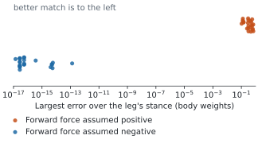
Example. One of 24 legs drawn at random from the 228 legs of the treadmill pilot recording (seed 20261118): a left leg where assuming forward force is positive is off by up to 0.13 body weights and assuming it is negative is off by only 5e-15.
How much was affected
In the 36 recordings compared before and after (30 overground, 6 treadmill, all AB06; 128,400 rows) the new rules changed 484,957 force values. None of the other columns changed.
Of the 2,301 local recordings, 36 have been compared before and after, all from AB06, so 1.6% of recordings. Percentages are not extrapolated. The old rule applied to every recording with force plates. Overground values changed from missing to measured; treadmill values changed from measured to missing, mostly because centre of pressure is now left missing when the foot carries under 0.2 body weight.
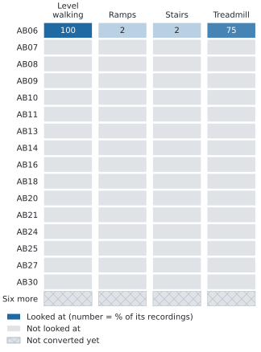
| Task | Recordings compared | Rows | Force values changed | Missing to measured | Measured to missing |
|---|---|---|---|---|---|
| Level walking (AB06) | 30 | 20,550 | 46,503 | 46,503 | 0 |
| Treadmill (AB06) | 6 | 107,850 | 438,454 | 0 | 271,392 |
| Ramps and stairs | 1 and 1 (pilot only) | 300 and 150 | not measured | not measured | not measured |
What else this could affect
Direction: a wrong plate or sign changes force and centre of pressure. Angles and the authors' joint moments are separate source columns.
- Also wrong, fixed in a pilot Forces and centre of pressure of the 36 compared recordings. Every changed value is a force or centre-of-pressure value. How we know: 484,957 force values changed; centre of pressure agrees with the measured plate position to 1e-14 m at contact.
- Checked, not affected Joint angles, moments, powers and timing in those recordings. They are copied from the authors' files, not computed from our force columns. How we know: All non-force columns identical in 36 recordings (128,400 rows) before and after.
- Not checked Ramp and stair forces. Only 2 ramp steps and 1 stair step were rebuilt with the new rules. No evidence yet.
- Not checked Treadmill and overground recordings other than the 36. Needs the full rebuild, which is a guarded job (a supervised run with memory limits). No evidence yet.
- Not checked The plate rule itself. The rule follows the publisher's geometry; no independent contact label exists to test it. No evidence yet.
4. Sideways force and centre of pressure point opposite ways for the two feet
Decided, fix not yet run The maintainers chose option B: positive outward for each leg, so the left leg is mirrored. The conversion code has not been changed or run for this.
What is wrong. The sideways columns were exported on the lab's fixed X axis. That axis points to the person's right when they face the lab's negative Z direction. So it points outward for the right foot and inward for the left foot, and it flips when they walk the other way. The name 'lateral' therefore does not describe the numbers.
How we know. We read the force plate table of three treadmill recordings drawn at random (seed 20261118), one at a time. On the right plate the mean sideways force over stance is -32.1, -23.1 and -27.4 N; on the left plate it is +31.8, +40.9 and +23.4 N. Same axis, opposite signs.
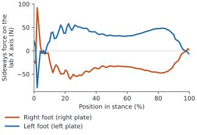
Example. AB07, treadmill trial 2: 123 right-foot and 123 left-foot stance phases averaged. The right foot pushes toward negative X, the left toward positive X.
How much was affected
All 2,301 local recordings (100%), in the two sideways force columns and the two sideways centre-of-pressure columns, wherever a plate gives a value.
Recordings: 2,301 local ones; the 846 not yet converted would be affected the same way. Steps and samples are not counted because the fix is not run. In 8 recordings checked for walking direction, 72,143 of 76,909 on-plate samples (93.8%) face -Z, 4,486 (5.8%) face +Z and 280 (0.4%) walk along X.

| Treadmill recording (drawn at random) | Right plate mean (N) | Left plate mean (N) |
|---|---|---|
| AB07, treadmill trial 2 | -32.1 | +31.8 |
| AB06, treadmill trial 6 | -23.1 | +40.9 |
| AB25, treadmill trial 3 | -27.4 | +23.4 |
What else this could affect
Direction: the sign fix changes only sideways force and sideways centre of pressure. It does not reach vertical or forward values or any angle.
- Also wrong, not yet fixed Sideways centre of pressure. It is measured on the same X axis as the sideways force, so it has the same left-right flip. How we know: Both columns are declared lab +X in the conventions review.
- Checked, not affected Vertical force and centre-of-pressure height. They sit on the lab's up axis, which is checked. How we know: Gravity points down the lab Y axis; right-handed in 100% of 8 sampled recordings.
- Checked, not affected Forward force and centre of pressure. Their sign comes from the measured pelvis direction of each step, not from the sideways rule. How we know: Forward sign measured per step on the lab Z axis; missing if the direction is unclear.
- Checked, not affected Angles, joint moments and powers. Changing a force or position sign left every other column exactly as it was in the pilot runs. How we know: Non-force columns identical in 2 pilot recordings (114 treadmill and 2 ramp steps).
- Not checked Walking along the X axis. 280 of 76,909 on-plate samples in 8 recordings walk along X, where 'sideways' would be forward or backward. Beyond those 8 recordings it is not measured. No evidence yet.
5. Pelvis tilt, and the angles built on it, do not match the markers
Decided, fix not yet run The maintainers chose option C: take tilt from the pelvis markers directly. The conversion code has not been changed or run for this.
What is wrong. The old conversion code exported the authors' model 'pelvis tilt' as forward-back tilt. The authors' model turns the pelvis about 90 degrees in heading, so that column is not forward-back tilt. After removing the heading, no tilt we can derive from the authors' data follows the marker tilt over treadmill strides, and overground it follows only partly. Thigh, shank, foot and trunk angles were built on that tilt.
How we know. We compared each candidate with the tilt of the four pelvis markers over the strides of 8 recordings drawn at random (seed 20261027). Stride-average agreement on the two treadmill recordings is 0.07 and -0.25 (1 would be identical). In a separate set of 131 recordings, only 1 had the model's heading in the forward-back frame.
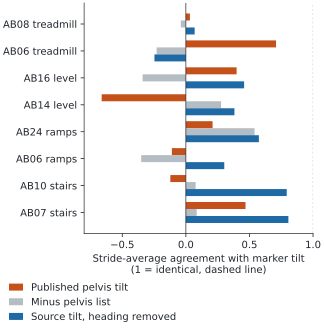
Example. AB08 treadmill, 124 strides: the published pelvis tilt agrees with the marker tilt at 0.03. The marker-based tilt sits about 19 degrees from the model's zero.
How much was affected
The pelvis tilt column and four angle columns built on it (thigh, shank, foot, trunk) in all 2,301 local recordings (100%).
Recordings: 2,301 local ones. Evidence comes from 8 recordings (7 participants) for agreement and 131 recordings (6 participants) for heading. Strides and samples are not counted for the whole set.

| Recording (drawn at random) | Strides | Published pelvis tilt | Heading removed | Marker tilt offset |
|---|---|---|---|---|
| AB08 treadmill | 124 | 0.03 | 0.07 | 18.6° |
| AB06 treadmill | 139 | 0.71 | -0.25 | 17.0° |
| AB16 level walking | 13 | 0.40 | 0.46 | 15.8° |
| AB14 level walking | 11 | -0.66 | 0.38 | 17.6° |
| AB24 ramps | 12 | 0.21 | 0.57 | 17.8° |
| AB06 ramps | 12 | -0.11 | 0.30 | 17.0° |
| AB10 stairs | 8 | -0.12 | 0.79 | 17.1° |
| AB07 stairs | 11 | 0.47 | 0.81 | 17.5° |
What else this could affect
Direction: pelvis tilt feeds the thigh, shank, foot and trunk angles. Hip, knee and ankle angles are separate joint angles.
- Also wrong, not yet fixed Thigh, shank, foot and trunk angles (side view). They inherit the pelvis tilt, so they carry the same error. How we know: The conversion builds them from the pelvis tilt; the marker route would mix marker and model zeros.
- Checked, not affected Hip, knee and ankle angles. They are the model's own joint angles, not built on the pelvis tilt column. How we know: 0 wrong signs among 648 leg channels tested (521 right, 127 left undecided).
- Not checked Joint moments and powers. They are the authors' own values and do not use our pelvis column, so no change is expected, but no run has shown it. No evidence yet.
- Not checked Why the treadmill markers and the model disagree. Marker noise, soft tissue and model weighting are candidates. It needs a guarded job (a supervised run with memory limits). No evidence yet.
- Not checked The six participants not yet converted. Their files have not been read. No evidence yet.
6. Joint-angle zero is now defined by the segment angles
Decided, fix not yet run The maintainers decided on 23 November 2026: joint angles are differences of segment angles, and segment angles are measured against gravity, so there is no separate joint zero (no static pose, no model zero). The conversion code has not been changed or run for this. Needs: segment angles (thigh, shank, foot and pelvis) for every recording. Pelvis-marker tilt is available (the earlier pelvis decision); whether thigh, shank and foot angles can be built from the markers and the ankle centre found: not checked. A guarded job is needed to measure how far the old zeros differ from the new one.
What is wrong. Joint angles come in two versions. One is zero at the model's own zero. The other is the trial angle minus the average of the participant's static standing trial (added by the authors in April 2024). The conversion code reads the relative version, our sign tests used the model zero, and the 2021 archive of AB17 has no relative version. The maintainers have now decided the zero (see the status above); the size of the difference between the old files and the new rule is not measured.
How we know. The README dates the relative files to 28 April 2024, and the authors' script subtracts the column average of the first static trial it finds, without wrapping angles. We then tried to measure the difference with our safe file reader: it refused all 20 files we tried (16 static-pose files and one relative file for each of the four tasks).
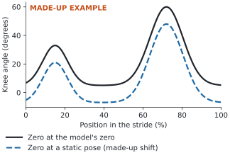
Example. No measured example exists: the size of the difference has not been measured, so the figure is a made-up illustration, labelled as one.
How much was affected
Every joint angle in all 2,301 local recordings (100%) is affected by the new zero rule. The size of the difference is not measured.
Recordings: 2,301 local ones. Participants: all 16 local and the six not yet converted. Samples are not counted. 'Affected' means the choice applies, not that the values are wrong.

| What we tried | Files | Read |
|---|---|---|
| Static-pose joint-angle files (one per local participant) | 16 | 0 |
| Relative joint-angle files (one per task, drawn at random) | 4 | 0 |
What else this could affect
Direction: the zero shifts every sample of the joint angles. Moments and powers come from separate files.
- Not checked Hip, knee and ankle angles. Every sample shifts by a constant that is not measured here. No evidence yet.
- Checked, not affected Signs of hip, knee and ankle angles. A constant shift does not flip a sign; our sign test found none wrong. How we know: 0 wrong signs in 648 leg channels tested (305 applied, 216 suggested, 127 left undecided), using the model zero.
- Not checked Reference ranges for the angles. Ranges depend on the zero. The zero is now decided, so ranges can be set only after the angles are recomputed. No evidence yet.
- Checked, not affected Joint moments and powers. The authors' script only writes a new angle file; moments are read from their own files. How we know: The authors' script writes the relative angle file only and leaves the moment files alone.
- Not checked Thigh, shank, foot and trunk angles. They are tied to the pelvis problem (see its card). No evidence yet.
7. The unit of participant weight is not stated
Open Needs: source evidence first (the authors' scripts or paper). If none turns up, a decision will be needed.
What is wrong. Forces are divided by body weight and moments and powers by body mass, using the Weight number in the subject sheet. No file we hold states its unit. The numbers look like kilograms, but that is not proof, and the model's mass is not an acceptable stand-in.
How we know. The README gives no unit for the subject sheet; the authors' inverse-kinematics tool does not use it; a download of the 2021 scripts archive was refused. The local scripts divide forces and moments by it, which supports kilograms but does not prove it. The 22 values run from 52.16 to 96.16.
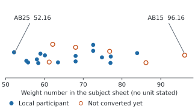
Example. AB17 has the Weight number 61.23; AB25 has 52.16. Neither number carries a unit.
How much was affected
Every force, moment and power column that is divided by body weight or mass, in all 2,301 local recordings (100%), and all 22 participants have a number.
Recordings: 2,301 local ones. Participants: 22 of 22 have a number; the unit is the open question. Samples are not counted.
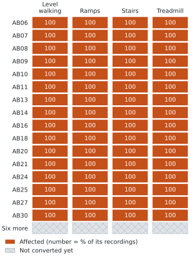
| Participants | Weight number present | Unit stated |
|---|---|---|
| 22 of 22 | Yes | No |
What else this could affect
Direction: the weight unit scales forces, moments and powers. It does not touch angles or positions.
- Not checked Forces in body weights. They scale directly with the unit; a wrong unit would scale every value. No evidence yet.
- Not checked Joint moments and powers per kilogram. Same scaling; no check against another source has been run. No evidence yet.
- Checked, not affected Centre-of-pressure positions in metres. They come from plate and marker positions, not from weight. How we know: Computed from plate position minus ankle marker position, in metres.
- Checked, not affected Joint angles. Angles do not use mass. How we know: Angles are read from the authors' joint angle files.
8. Many steps of the other leg were not exported
Open A fix that processes both legs is written; its two trial runs are prepared but have not run. Needs: a guarded job (a supervised run with memory limits).
What is wrong. The old conversion code exported one reference leg's steps for each stretch of walking and left out the matching steps of the other leg, even when the source has them. Opposite-leg steps overlap in time, so they are not independent trials.
How we know. We compared every source step in 36 completed recordings with what was exported.
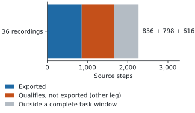
Example. Of 2,270 source steps, 856 were exported, 798 were not exported although their leg's step qualifies, and 616 fell outside a complete task window.
How much was affected
798 of 2,270 source steps (35.2%) in 36 recordings qualify but were not exported. Another 616 (27.1%) lie outside a task window.
Counted over 36 of the 2,301 local recordings (30 overground, 6 treadmill, all AB06). The local source gait tables hold 78,604 steps in all; how many qualify across them is not measured. Samples are not counted.
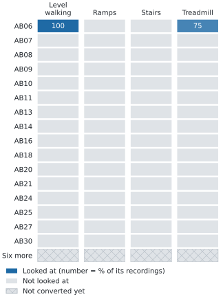
| Steps in the 36 recordings | Count | Share |
|---|---|---|
| Exported | 856 | 37.7% |
| Qualify but not exported (other leg) | 798 | 35.2% |
| Outside a complete task window | 616 | 27.1% |
What else this could affect
Direction: missing steps lower the number of strides per person and task. They do not change values inside the strides that were exported.
- Also wrong, not yet fixed Number of strides per participant and task. Counts are lower than the source supports. How we know: 798 qualifying steps missing in 36 recordings.
- Not checked Treating strides as independent trials. Left and right steps overlap in time; the overlap is documented but its effect on any statistic is not tested. No evidence yet.
- Not checked Force and centre of pressure of the recovered steps. They would need the force checks to run again. No evidence yet.
- Not checked Steps already exported. A hardened check that every old step stays identical exists with 16 synthetic tests but has not been run on the real recordings. No evidence yet.
- Not checked Ramps and stairs. The step count covers overground and treadmill recordings only. No evidence yet.
9. Ramp and stair labels could be filled with defaults
Open A fix that removes the defaults is written and passed 6 small tests. It has not been run in MATLAB and the full rebuild does not use it. Needs: a guarded job (a supervised run with memory limits).
What is wrong. If the source lacks a ramp direction the old conversion code still assumes ascent, if it lacks a stair height it uses four inches, and if no labelled step survives it falls back to the whole recording. These would be invented labels.
How we know. We read the terrain label of every local ramp and stair recording. None is missing or invalid. In the 51 completed recordings, 39 ramp and stair steps show no default.
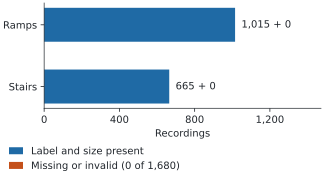
Example. Of 1,015 ramp recordings and 665 stair recordings, 0 lack a label, an incline or a stair height.
How much was affected
0 of 1,680 local ramp and stair recordings (0%) lack a source label. The risk is latent, so what is exposed is 1,680 recordings.
Source labels were checked in all 1,680 local ramp and stair recordings; output checks cover 39 steps of the completed recordings only (all AB06). The six participants not yet converted are not checked.
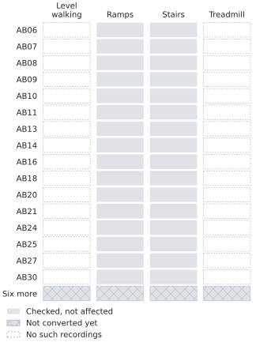
| Task | Recordings | Label or size missing |
|---|---|---|
| Ramps | 1,015 | 0 |
| Stairs | 665 | 0 |
What else this could affect
Direction: a wrong terrain label changes which strides are grouped together, not the values inside a stride.
- Checked, not affected Which strides are grouped as ramp up, ramp down, stairs. No default was used in the checked outputs. How we know: 39 terrain steps checked; current output fallback observed: no.
- Checked, not affected Step timing from the source gait tables. Every source gait table was read. How we know: 4,602 tables, 21,363,858 samples, 0 non-finite, 0 out of range, 0 of 78,604 steps with issues.
- Not checked Whether the stair or ramp size is true. Sizes are the authors' annotations, not measured geometry. No evidence yet.
- Not checked Stair outputs. The rebuild failed on a stair recording, so no stair output has been reviewed. No evidence yet.
10. Only 102 of 2,301 recordings have been rebuilt, and a stair recording failed
Open The rebuild stopped when its worker failed on a stair recording. Needs: a guarded job to find out why (a supervised run with memory limits).
What is wrong. The full rebuild stopped after 102 recordings (1,299 steps), all from AB06. The native worker failed on a stair recording (AB06, stair 1 left, trial 2). No other participant has been rebuilt, and only one stair recording finished. Two restart attempts also ended with an error.
How we know. The batch status reports 102 of 2,301 completed and 1,299 steps; the output folder holds only AB06: 30 level, 63 ramp, 8 treadmill and 1 stair recording.
Example. AB06 level walking, ramps and treadmill are all rebuilt. AB06 stairs: 1 of 42 finished, 1 failed, 40 not tried.
How much was affected
2,199 of 2,301 local recordings (95.6%) are not rebuilt; 15 of 16 local participants have none. Stairs: 664 of 665 (99.8%) not rebuilt.
Recordings: 2,301 local ones (the 846 not yet converted would add more). Steps: 1,299 rebuilt steps; the source holds 78,604. Samples are not counted.
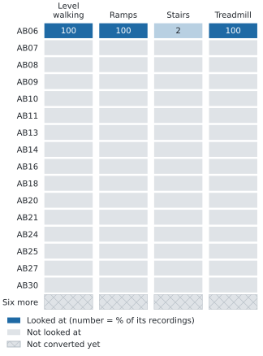
| Task (AB06) | Recordings in AB06 | Rebuilt |
|---|---|---|
| Level walking | 30 | 30 |
| Ramps | 63 | 63 |
| Stairs | 42 | 1 |
| Treadmill | 8 | 8 |
What else this could affect
Direction: every other fix on this page can only be adopted after a rebuild. Source data are not affected.
- Checked, not affected Source timing in all 2,301 recordings. The source gait tables were read, not the rebuilt data. How we know: 4,602 tables, 0 steps with issues.
- Checked, not affected Force values of the 51 completed recordings. They match the original force and marker tables. How we know: 51 recordings, 1,111 steps; largest difference 2e-12.
- Not checked The other 51 completed recordings. Readback has not covered them. No evidence yet.
- Not checked Quality ranges and filtered version. They need the full rebuild. No evidence yet.
- Not checked Why the stair recording failed. The cause has not been found. No evidence yet.
11. Some legs have no usable force plate
Documented only, kept as published Force and centre of pressure are left missing when no plate can be matched to a leg. We never guess.
What is wrong. On the overground walkway a foot does not always land on one plate, and sometimes two feet land on one. Those legs have no force or centre of pressure. This is a limit of the source, not an error we corrected.
How we know. We read back the force of 51 completed recordings and counted the legs that matched a plate by position. Separately, a seeded sample of 3,389 strides from 6 participants was classified.
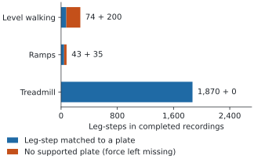
Example. Of 3,389 sampled strides, 1,538 used a named plate, 701 a plate matched by nearest foot, 795 had no plate contact, 292 had stance that was not captured as one block, and 63 had one plate carrying both feet.
How much was affected
235 of 2,222 leg-steps (10.6%) in the 51 completed recordings have no supported plate: overground 200 of 274 (73.0%), ramps 35 of 78 (44.9%), treadmill 0 of 1,870.
A leg-step is one leg's step in one recording (both legs of each step are counted). Counts come from AB06's 51 completed recordings, which is 2.2% of the 2,301, plus a separate seeded sample of 3,389 strides from 6 participants. Stairs are not covered because no stair output was reviewed.
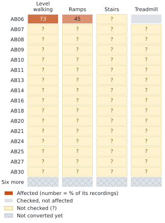
| Task (completed recordings) | Leg-steps | No supported plate | Share |
|---|---|---|---|
| Level walking | 274 | 200 | 73.0% |
| Ramps | 78 | 35 | 44.9% |
| Treadmill | 1,870 | 0 | 0% |
What else this could affect
Direction: a leg with no plate has no force or centre of pressure. Its joint angles, moments and powers are separate source columns.
- Left out Force and centre of pressure of those legs. They are missing, not estimated. How we know: 235 of 2,222 leg-steps in the completed recordings.
- Checked, not affected Joint angles, moments and powers of those legs. They are copied from the authors' files. How we know: Non-force columns identical in 36 recordings when the force rules changed.
- Not checked Whether the matched plate is the right plate. The match uses marker distance, not an independent contact label. No evidence yet.
- Not checked Any participant except AB06. No other participant has been read back. No evidence yet.
12. Forward force and centre of pressure use one fixed lab direction
Documented only, kept as published Forward values are measured on the lab Z axis only. They are kept with this limit stated.
What is wrong. Forward force and forward centre of pressure use the lab Z axis, signed by the measured pelvis direction of each step. A step is kept while the walking path stays within 45 degrees of Z. On curved overground paths the forward value is therefore under-reported. Steps where the direction is unclear are left missing.
How we know. We measured the path direction in 8 recordings drawn at random (seed 20261027). The 95th percentile of the deviation from Z is 7.7 to 36.4 degrees, lowest on the treadmill and highest overground.
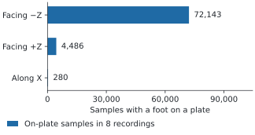
Example. AB16 level walking: half of the samples deviate by 5.2 degrees or less, 95% by 36.4 degrees or less, and the worst by 45.0.
How much was affected
Forward force and forward centre of pressure in all 2,301 local recordings (100%) carry this limit; how much is lost per recording is measured in 8 only.
Recordings: 2,301 local ones; angles measured in 8. Samples: 76,909 on-plate samples in those 8 recordings.
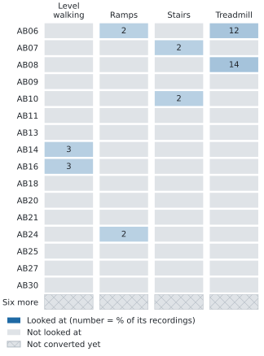
| Recording (drawn at random) | Deviation from Z, 95% of samples (degrees) | Worst (degrees) |
|---|---|---|
| AB08 treadmill | 10.0 | 25.7 |
| AB06 treadmill | 7.7 | 35.9 |
| AB16 level walking | 36.4 | 45.0 |
| AB14 level walking | 31.5 | 44.3 |
| AB24 ramps | 11.3 | 44.9 |
| AB06 ramps | 10.3 | 44.9 |
| AB10 stairs | 15.6 | 44.4 |
| AB07 stairs | 11.6 | 44.8 |
What else this could affect
Direction: the path direction affects forward and sideways force and centre of pressure. Vertical values are not affected.
- Not checked Sideways force and centre of pressure. A curved path also tilts the sideways axis; no check has measured it. No evidence yet.
- Checked, not affected Vertical force and centre-of-pressure height. They do not depend on path direction. How we know: Vertical uses the lab up axis in all 8 recordings.
- Not checked Forces on ramps. Ramp forces are along the lab's up axis, not the ramp surface. How much that matters is not measured. No evidence yet.
- Not checked Joint angles, moments and powers. They do not use this direction; no run has compared them. No evidence yet.
13. Centre of pressure is measured from the outer ankle marker, not from the decided origin
Decided, fix not yet run The maintainers decided on 23 November 2026: the centre of pressure moves with the foot, with its origin 100 mm forward of the ankle joint centre along the foot's heel-to-toe direction. The conversion code has not been changed or run for this. Needs: the ankle joint centre and the foot's direction for every sample, from markers. Whether the markers give them: not checked. The current offset from the outer ankle marker is not measured.
What is wrong. Centre of pressure is stored relative to the outer ankle marker, not the ankle joint centre. The distance between the two is not measured. The authors' own centre of pressure is also filtered at 15 Hz by default, and is set to the plate origin when the plate sees almost no load; our code leaves those samples missing.
How we know. The authors' scripts were read line by line. In 8 sampled recordings the centre of pressure lies a median of 9.4 cm from the nearer foot, so it lands near the foot.
Example. A median distance of 9.4 cm to the nearer foot says the values land near the right foot. It does not say how far they sit from the ankle joint.
How much was affected
All centre-of-pressure columns in all 2,301 local recordings (100%) are relative to the ankle marker, not to the decided origin (100 mm forward of the ankle joint centre in the foot's frame). The offset to the joint is not measured.
Recordings: 2,301 local ones. Samples are not counted. 'Affected' means the stated origin applies.

| Check | Result |
|---|---|
| Median distance from centre of pressure to the nearer foot, 8 recordings | 9.4 cm |
| Distance to the ankle joint centre | Not measured |
What else this could affect
Direction: the origin offsets all centre-of-pressure positions by a roughly constant amount. Forces and angles are unaffected.
- Not checked Centre-of-pressure positions. Every value is shifted by the unmeasured ankle-marker offset. No evidence yet.
- Checked, not affected Forces and joint angles. They do not use the centre of pressure. How we know: Forces come from plate force columns and angles from joint angle files.
- Not checked Anything computed from centre of pressure, such as moment arms. No such quantity is exported or tested. No evidence yet.
What we checked and found no problem
- All 4,602 source gait-phase tables of the 16 local participants were read: 21,363,858 samples, 0 non-finite or out of range, and 0 of 78,604 steps with a timing problem.
- All 1,680 local ramp and stair recordings carry a terrain label and a positive incline or stair height.
- Force values of 51 completed recordings (1,111 steps) match the original force and marker tables; the largest difference is 2e-12.
- The sign test on 648 leg channels (6 participants, seeded) found 0 wrong signs; 127 channels were left undecided and are not counted as passed.
- Vertical force and centre-of-pressure height use the lab's up axis; the lab frame was right-handed in all 8 sampled recordings.
A check that passed is not approval. It says only that this one thing was not found wrong.
Other limits we know about
- Plate moments are not exported: their reference point and sign are not stated, and values of hundreds of newton-metres on contact show they are not free moments.
- Overground files include a virtual 'Combined' plate (a force-weighted merge of the real plates) that we do not separate from its parts.
- Static-pose file choice in the authors' script depends on file ordering, so the intended calibration for a participant is unknown.
- The 2024 source folder is a live working copy: one file in AB28 is dated October 2026, so each download re-lists the folder first.
- No producer log ties the shipped force-conversion tools to the published force files; the frame is corroborated by data, not proven by the producer.
Everything marked not checked
Each item below needs a guarded job, a new decision or source evidence before it can be checked.
- 1. Six of the 22 participants are not in the local data
- Joint-angle zero used for the six
- Body mass of the six
- 2. The local files are the authors' 2024 copy, not the checksummed 2021 release
- Ramp joint moments and powers
- The other 15 local participants
- 3. Force plates and force signs were picked from force and ankle-moment waveforms
- Ramp and stair forces
- Treadmill and overground recordings other than the 36
- The plate rule itself
- 4. Sideways force and centre of pressure point opposite ways for the two feet
- Walking along the X axis
- 5. Pelvis tilt, and the angles built on it, do not match the markers
- Joint moments and powers
- Why the treadmill markers and the model disagree
- The six participants not yet converted
- 6. Joint-angle zero is now defined by the segment angles
- Hip, knee and ankle angles
- Reference ranges for the angles
- Thigh, shank, foot and trunk angles
- 7. The unit of participant weight is not stated
- Forces in body weights
- Joint moments and powers per kilogram
- 8. Many steps of the other leg were not exported
- Treating strides as independent trials
- Force and centre of pressure of the recovered steps
- Steps already exported
- Ramps and stairs
- 9. Ramp and stair labels could be filled with defaults
- Whether the stair or ramp size is true
- Stair outputs
- 10. Only 102 of 2,301 recordings have been rebuilt, and a stair recording failed
- The other 51 completed recordings
- Quality ranges and filtered version
- Why the stair recording failed
- 11. Some legs have no usable force plate
- Whether the matched plate is the right plate
- Any participant except AB06
- 12. Forward force and centre of pressure use one fixed lab direction
- Sideways force and centre of pressure
- Forces on ramps
- Joint angles, moments and powers
- 13. Centre of pressure is measured from the outer ankle marker, not from the decided origin
- Centre-of-pressure positions
- Anything computed from centre of pressure, such as moment arms
Local review page, not published. The rebuilt files and the checks behind this page exist only on the maintainer's computer.